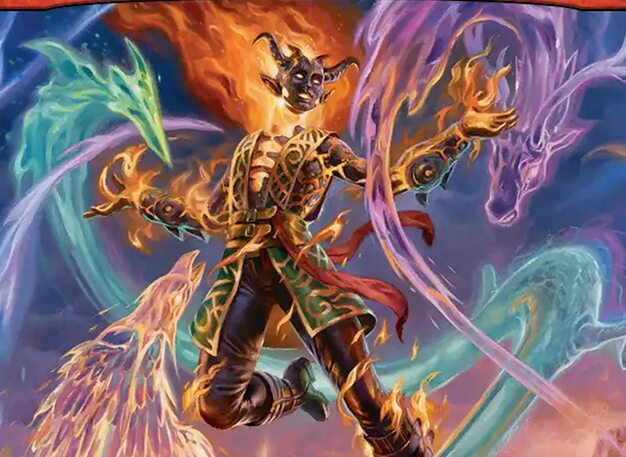
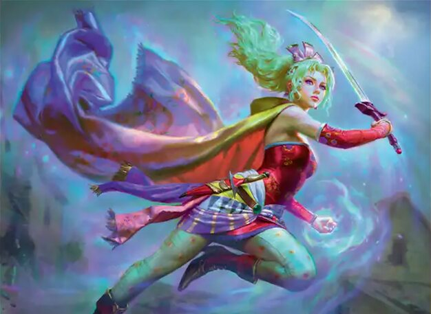
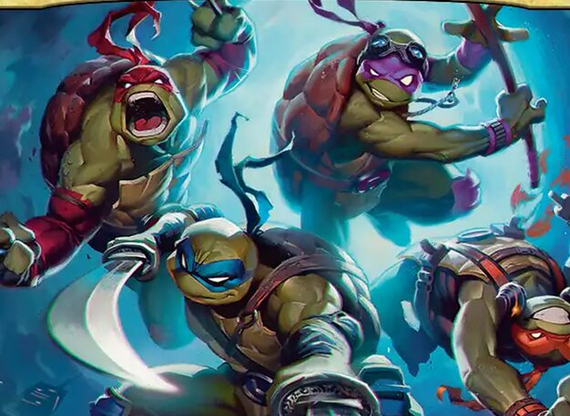
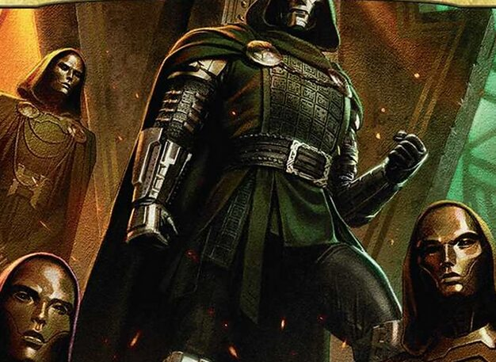

Latest tournament
Latest tournament:
up to €1,500, 68 Decks| # | Commander | Places | Wins / games | Elo now | Performance |
|---|---|---|---|---|---|
| 1 |  | 1221121211 | 6 / 10 | 1519▲47 | 2.01 |
| 2 |  | 1112112222 | 5 / 10 | 1730▲6 | 1.91 |
| 3 |  | 1121212112 | 6 / 10 | 1512▲34 | 1.89 |
| 4 |  | 2221111221 | 5 / 10 | 1546▲48 | 1.84 |
| 5 |  | 1121222212 | 4 / 10 | 1602▲27 | 1.66 |
| 6 |  | 2211222112 | 4 / 10 | 1595▲30 | 1.61 |
| 7 |  | 2212122121 | 4 / 10 | 1748▼9 | 1.60 |
| 8 |  | 1211222122 | 4 / 10 | 1566▲20 | 1.55 |
| 9 |  | 2221221112 | 4 / 10 | 1543▲32 | 1.54 |
| 10 |  | 4 / 10 | 1.50 | ||
| 11 |  | 2112221122 | 4 / 10 | 1529▲17 | 1.48 |
| 12 |  | 2111221222 | 4 / 10 | 1511▲19 | 1.47 |
| 13 |  | 2212222211 | 3 / 10 | 1646▲5 | 1.36 |
| 14 |  | 2221211222 | 3 / 10 | 1679▼5 | 1.35 |
| 15 |  | 1221222212 | 3 / 10 | 1646▼2 | 1.35 |
| 16 |  | 1122221222 | 3 / 10 | 1646▼4 | 1.32 |
| 17 |  | 3.2 / 10 | 1.27 | ||
| 18 |  | 2212212122 | 3 / 10 | 1632▲2 | 1.27 |
| 19 |  | 1212212222 | 3 / 10 | 1470▲17 | 1.26 |
| 20 |  | 2222221112 | 3 / 10 | 1481▲14 | 1.25 |
| 21 |  | 2212212221 | 3 / 10 | 1535▲8 | 1.25 |
| 22 |  | 1221222211 | 4 / 10 | 1458▲9 | 1.23 |
| 23 |  | =122222211 | 3.2 / 10 | 1474▲7 | 1.22 |
| 24 |  | 1122222212 | 3 / 10 | 1455▲12 | 1.21 |
| 25 |  | 1222212221 | 3 / 10 | 1493▲4 | 1.20 |
| 26 |  | 2212212122 | 3 / 10 | 1507▼2 | 1.15 |
| 27 |  | 2211122222 | 3 / 10 | 1449▲14 | 1.14 |
| 28 |  | 2221222121 | 3 / 10 | 1459▲5 | 1.10 |
| 29 |  | 1212221222 | 3 / 10 | 1392▲14 | 1.05 |
| 30 |  | 2222222211 | 2 / 10 | 1570▲4 | 1.02 |
| 31 |  | 2122122222 | 2 / 10 | 1573▼1 | 1.01 |
| 32 |  | 1222221=21 | 3.2 / 10 | 1364▲20 | 1.00 |
| 33 |  | 2121212222 | 3 / 10 | 1436±0 | 1.00 |
| 34 | 2122112222 | 3 / 10 | 1336▲23 | 1.00 | |
| 35 |  | 2222212122 | 2 / 10 | 1563▼5 | 1.00 |
| 36 |  | 1222222221 | 2 / 10 | 1618▼13 | 0.99 |
| 37 |  | 2222122212 | 2 / 10 | 1557▼9 | 0.98 |
| 38 |  | =122212222 | 2.2 / 10 | 1470±0 | 0.97 |
| 39 |  | 2122222212 | 2 / 10 | 1560▼7 | 0.97 |
| 40 |  | 2212212122 | 3 / 10 | 1364▲14 | 0.93 |
| 41 |  | 2222221122 | 2 / 10 | 1496▼8 | 0.93 |
| 42 |  | 2212122222 | 2 / 10 | 1489▼8 | 0.92 |
| 43 |  | 2222221122 | 2 / 10 | 1577▼18 | 0.90 |
| 44 |  | 2221122222 | 2 / 10 | 1435▼3 | 0.88 |
| 45 |  | 2222122122 | 2 / 10 | 1445▼10 | 0.87 |
| 46 |  | 2222222112 | 2 / 10 | 1481▼19 | 0.84 |
| 47 |  | 2211222222 | 2 / 10 | 1411▼5 | 0.82 |
| 48 |  | 2122222212 | 2 / 10 | 1438▼10 | 0.82 |
| 49 |  | 21222222=1 | 2.2 / 10 | 1376▼1 | 0.78 |
| 50 |  | 2222222122 | 1 / 10 | 1609▼17 | 0.75 |
| 51 |  | 1222222221 | 2 / 10 | 1414▼11 | 0.74 |
| 52 |  | =222221222 | 1.2 / 10 | 1480▼21 | 0.71 |
| 53 |  | 2222112222 | 2 / 10 | 1361▼1 | 0.70 |
| 54 |  | 1222222222 | 1 / 10 | 1470▼17 | 0.68 |
| 55 |  | 2222222122 | 1 / 10 | 1491▼16 | 0.68 |
| 56 |  | 1 / 10 | 0.68 | ||
| 57 |  | 2221222222 | 1 / 10 | 1550▼24 | 0.68 |
| 58 |  | 1 / 10 | 0.67 | ||
| 59 |  | 2222222221 | 1 / 10 | 1467▼8 | 0.65 |
| 60 |  | 2222122222 | 1 / 10 | 1443▼20 | 0.62 |
| 61 |  | 22222222=1 | 1.2 / 10 | 1377▼15 | 0.60 |
| 62 |  | 2222212222 | 1 / 10 | 1414▼23 | 0.57 |
| 63 |  | 2222222212 | 1 / 10 | 1434▼27 | 0.56 |
| 64 |  | 2212222222 | 1 / 10 | 1336▼13 | 0.51 |
| 65 |  | 2222221222 | 1 / 10 | 1339▼11 | 0.51 |
| 66 |  | 2222222222 | 0 / 10 | 1636▼42 | 0.50 |
| 67 |  | 2222222=22 | 0.2 / 10 | 1341▼24 | 0.38 |
| 68 |  | 2222222222 | 0 / 10 | 1342▼28 | 0.37 |
Places: the place in every game of this tournament, first on the left – 1 win (gold), 2 2nd (silver), 3 3rd (bronze), 4 4th, = draw. Tier and Elo: current, ▲/▼ = change from this tournament.
Sorted by performance: 1.00 = won as often as expected, adjusted for opponents
Drawn games split the win between the players (hence values like 4.5 or 5.3)
A single tournament is still a lot of luck; the overall rankings are more reliable